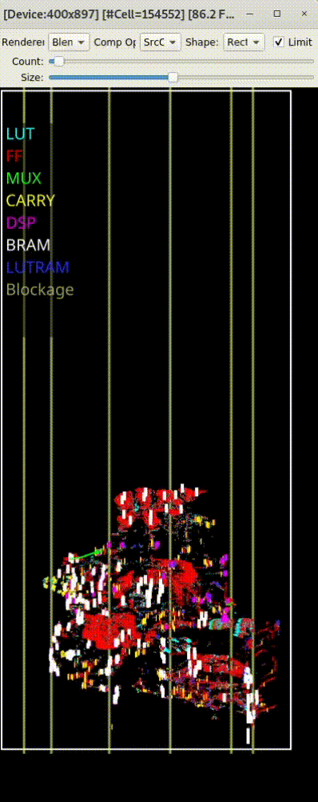
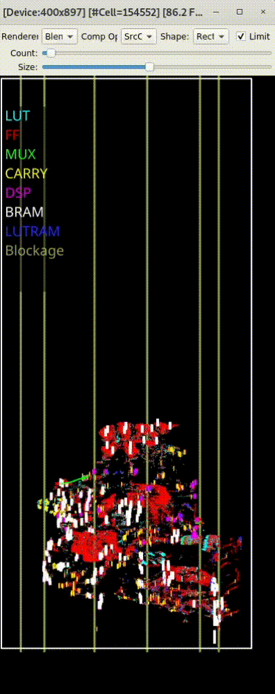

Introduction
AMF-Placer 2.0 is an open-source comprehensive timing-driven Analytical Mixed-size FPGA placer. It supports mixed-size placement of heterogeneous resources (e.g., LUT/FF/LUTRAM/MUX/CARRY/DSP/BRAM) on FPGA. To speed up the convergence and improve the timing quality of the placement, standing upon the shoulders of AMF-Placer 1.0, AMF-Placer 2.0 is equipped with a series of new techniques for timing optimization, including an effective regression-based timing model, placement-blockage-aware anchor insertion, WNS-aware timing-driven quadratic placement, and sector-guided detailed placement. Based on a set of the latest large open-source benchmarks from various domains for Xilinx Ultrascale FPGAs, experimental results indicate that critical path delays realized by AMF-Placer 2.0 are averagely 2.2% and 0.59% higher than those achieved by commercial tool Xilinx Vivavo 2020.2 and 2021.2 respectively. Meanwhile, the average runtime of placement procedure of AMF-Placer 2.0 is 14% and 8.5% higher than Xilinx Vivavo 2020.2 and 2021.2 respectively. Although limited by the absence of the exact timing model of the device, the information of design hierarchy and accurate routing feedback, AMF-Placer 2.0 is the first open-source FPGA placer which can handle the timing-driven mixed-size placement of practical complex designs with various FPGA resources and achieves the comparable quality to the latest commercial tools. Detailed Doxygen-based documentation (e.g, introduction, usage, implementation and experimental results) can be accessed here.
AMF-Placer 2.0 is the extension of AMF-Placer 1.0. AMF-Placer 1.0 is equipped with a series of new techniques for wirelength optimization, cell spreading, packing, and legalization. Based on a set of the latest large open-source benchmarks from various domains for Xilinx Ultrascale FPGAs, experimental results indicate that AMF-Placer can improve HPWL by 20.4%-89.3% and reduce runtime by 8.0%-84.2%, compared to the baseline. Furthermore, utilizing the parallelism of the proposed algorithms, with 8 threads, the placement procedure can be accelerated by 2.41x on average.
")
")
") 
 
License
This project is developed by Reconfiguration Computing Systems Lab, Hong Kong University of Science and Technology (HKUST). Tingyuan Liang (tliang@connect.ust.hk), Gengjie Chen (chen_gengjie.hotmail.com), Jieru Zhao (zhao-jieru.sjtu.edu.cn), Sharad Sinha (sharad@iitgoa.ac.in) and Wei Zhang (eeweiz@ust.hk) are the major contributors of this project.
In this repo, we provide the basic implementation of AMF-Placer 2.0, under the Apache License 2.0, supporting comprehensive timing-driven placement with critical path delay and runtime which are downgraded slightly by ~5% on average. If you want to obtain the advanced version of AMF-Placer 2.0 to reproduce the experimental results in the paper of AMF-Placer 2.0 for academic evaluation or commercial usage, you are required to contact the authors Tingyuan Liang (tliang@connect.ust.hk) and Wei ZHANG (eeweiz@ust.hk) with your offcial instituation email and we will response in 72 hours. If you are commercial entities, you can also contact ttsamuel@ust.hk for licensing opportunities of the advanced version.
Documentation Hierarchy
- Basic Project Introduction: motivation, features and some experimental results.
- Get Started: guideline to use the placer for your work.
- Benchmarks and Experimental Results: practical benchmarks for evaluation and some experimental results at current stages.
- Publications: some papers which are the fundamental parts of this project.
- Implementation Explanation: the concrete explaination of the major novel contributions, the function modules and the placement procedure.
- Existing Problems When Exporting To Vivado: the concrete explaination of some of our known problems when interacting with Vivado.
- Some Failure Lessons: Some of our previous failure lessons might be helpful for people who also want to develop their own physical synthesis flow.
Motivations
- Just reinvent the wheel for fun, try to build a complete flow and reproduce/improve some state-of-art techniques in the latest papers.
- Resolve some existing constraints in some previous works and consider more practical situations, like FPGA mixed-size placement with a series of optimization from the perspectives of timing, clocking, routability-aware and parallelism.
- A beginner-friendly placement framework with clear hierarchy and detailed Doxygen-based documentation. We hope that it can lower the overhead for people who are also interested in this research area.
- Currently, this framework is under development and it is still far from our goals and the practical demands, but we are happy to share our progress in this GitHub repository. If you have any questions/problems/suggestions, please contact feel free to contact us (Tingyuan LIANG, tliang@connect.ust.hk)
Features
- supports placeemnt with a large number of mixed-size macros with shape constraints in practical FPGA applications.
- wirelength-driven, routability-aware, packing-aware, clock-aware, region-aware.
- initially timing-driven with basic embedded static timing analysis, WNS-aware global placement, efficient detailed placement
- a set of optional optimization techniques to improve mixed-size FPGA placement QoR
- parallelizes the implementation of each stage of placement based on multi-threading
- modularized function implementation for easier further development
- flexible and extensible JSON-based placement configuration
- supports placement check-point importing/exporting
- a set of pre-implementation benchmarks from latest practical FPGA applications
- provides a set of Tcl scripts which extracts design netlist from Vivado and exports post-placement information to Vivado
- A basic GUI for user to analyze the placement procedure to optimize the implementation
Todo List
- clock tree synthesis
- ckock-related optimization
Implementation Overview

Acknowledgement
We sincerely appreciate the kindly suggestions from reviewers, detailed explanations of UTPlaceF from Dr. Wuxi Li, useful advice on Vivado metric usages from Dr. Stephen Yang, fruitful discussion on some previous works with Ms. Yun Zhou and practical suggestions of the convenient usages of AMF-Placer from Mr. Jing Mai.
Issue Report
This project is under active development and far from perfect. We do want to make the placer useful for people in the community. Therefore,
- If you have any question/problem, please feel free to create an issue in the GitHub Issue or email us (Tingyuan LIANG, tliang@connect.ust.hk)
- We sincerely welcome code contribution to this project or suggestion in any approach!
(last updated Oct 23, 2022)